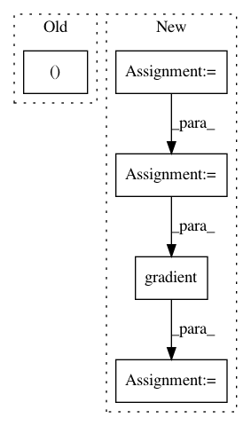

aa9d770505d914aea76888e5eb11b5ddad54ce77,skimage/feature/corner.py,,hessian_matrix,#Any#Any#Any#Any#,102
Before Change
Hxy = np.gradient(dx, axis=0)
Hyy = np.gradient(dy, axis=0)
return Hxx, Hxy, Hyy
def hessian_matrix_det(image, sigma):
After Change
mode=mode, cval=cval)
gradients = np.gradient(gaussian_filtered)
axes = range(image.ndim)
H_elems = [np.gradient(gradients[ax0], axis=ax1)
for ax0, ax1 in combinations_with_replacement(axes, 2)]
return H_elems
In pattern: SUPERPATTERN
Frequency: 3
Non-data size: 5
Instances
Project Name: scikit-image/scikit-image
Commit Name: aa9d770505d914aea76888e5eb11b5ddad54ce77
Time: 2016-07-16
Author: juan.n@unimelb.edu.au
File Name: skimage/feature/corner.py
Class Name:
Method Name: hessian_matrix
Project Name: tensorlayer/tensorlayer
Commit Name: 641a28fbf0daff0ad1ad0f43d2c4b545cb6f9656
Time: 2019-02-16
Author: dhsig552@163.com
File Name: examples/reinforcement_learning/tutorial_cartpole_ac.py
Class Name: Actor
Method Name: learn
Project Name: tensorlayer/tensorlayer
Commit Name: 641a28fbf0daff0ad1ad0f43d2c4b545cb6f9656
Time: 2019-02-16
Author: dhsig552@163.com
File Name: examples/reinforcement_learning/tutorial_cartpole_ac.py
Class Name: Critic
Method Name: learn